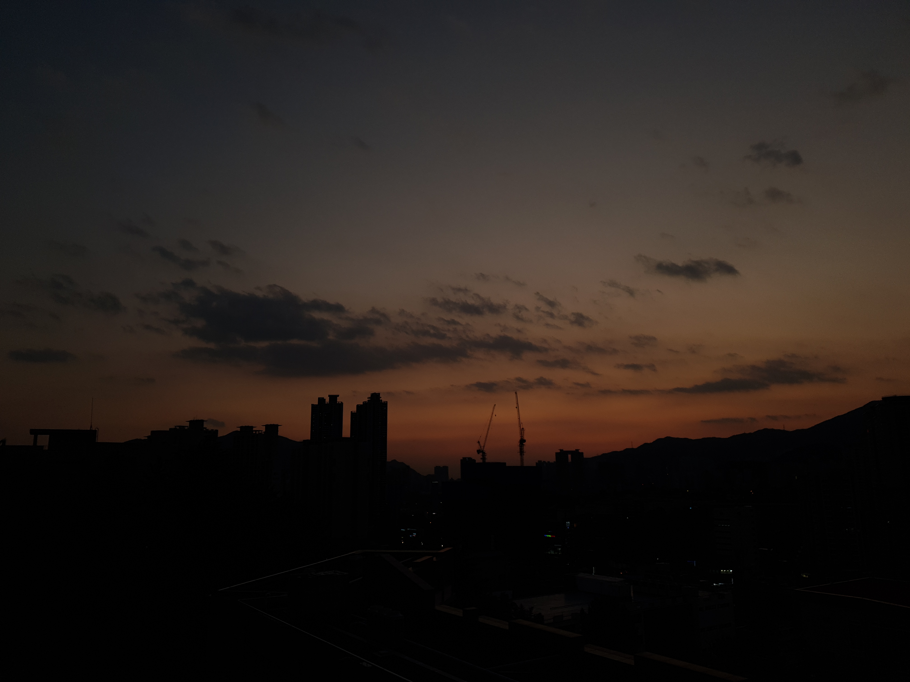

취미, Hobby
사진 촬영, 게임 등 다양한 취미가 있지만, 그 중에서도 사진 촬영을 굉장히 선호한다.
대부분 일상속에서 사진거리 찾기를 선호하는 편이고, 최대한 자연스러운 구도를 잡아 주변 분위기가 사물에 잘 녹아들게한다.
하지만 그저 취미에서 그치기 때문에 책을 사서 공부한다거나, 유튜브에서 강의를 찾아본다거나 하는 수고스러운 일은 일절 하지 않는다.

<위의 사진은 평소 본인이 원하는 구도의 사진이 잘 나올것이라 생각하고 찍었지만, 그렇게 나오지 않아 실망한 사진이다.>